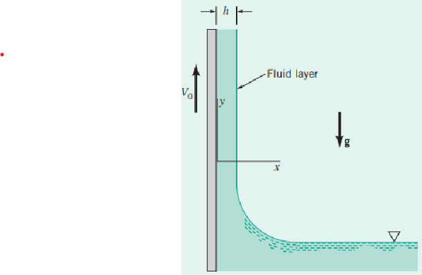
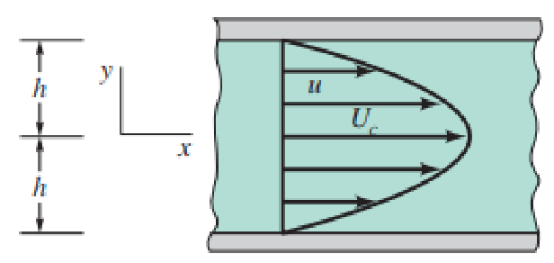
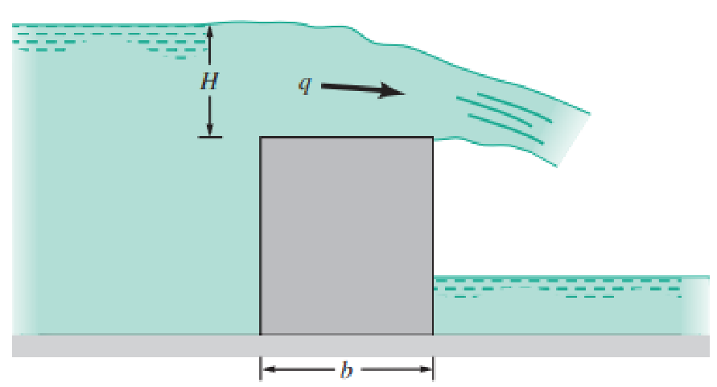
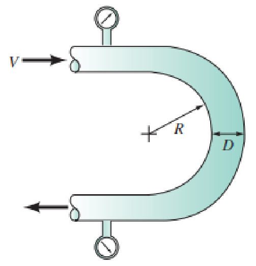
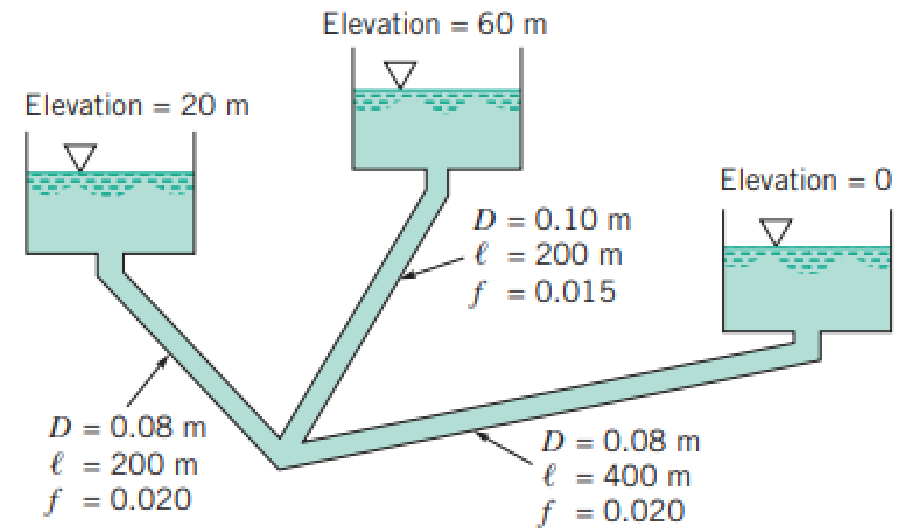

期末考完整題解
公告的 10 道考題，附示意圖與逐步解答。左側可快速跳題；右上「公式 / 概念」面板整理各章重點公式，並附互動計算機。每題的解答預設收合，建議先自己算一次再展開對答案。
Find：用 Navier–Stokes 方程式求流體膜的平均速度。

建立方程
只有 $y$ 方向速度分量 $v$（$u=w=0$）。由連續方程 $\partial v/\partial y=0$、穩態 $\partial v/\partial t=0$，故 $v=v(x)$。$x$、$z$ 方向的 N–S 化簡為 $\partial p/\partial x=0,\ \partial p/\partial z=0$，所以壓力在水平方向不變；膜表面 $x=h$ 為大氣壓，因此膜內各處皆為大氣壓（零錶壓）。
$y$ 方向運動方程：
$$0=-\rho g+\mu\frac{d^2 v}{dx^2}\ \Rightarrow\ \frac{d^2 v}{dx^2}=\frac{\gamma}{\mu}\quad(1)$$
積分與邊界條件
$$\frac{dv}{dx}=\frac{\gamma}{\mu}x+c_1\quad(2)$$
自由表面 $x=h$ 處剪應力為零（空氣阻力可忽略）：$\tau_{xy}=\mu(dv/dx)=0 \Rightarrow c_1=-\dfrac{\gamma h}{\mu}$。再積分一次：
$$v=\frac{\gamma}{2\mu}x^2-\frac{\gamma h}{\mu}x+c_2$$
皮帶處 $x=0$，$v=V_0 \Rightarrow c_2=V_0$，得速度分布：
$$v=\frac{\gamma}{2\mu}x^2-\frac{\gamma h}{\mu}x+V_0\quad(3)$$
平均速度
單位寬流量 $q=\displaystyle\int_0^h v\,dx=V_0 h-\frac{\gamma h^3}{3\mu}$。由 $q=Vh$：
兩片寬而固定的平行板間，黏性流體二維流動為拋物線速度分布：$u=U_c\left[1-\left(\tfrac{y}{h}\right)^2\right]$，$v=0$。若可能，求對應的流函數與速度勢。

流函數 $\psi$
定義 $\dfrac{\partial\psi}{\partial y}=u,\ \dfrac{\partial\psi}{\partial x}=-v$。由 $u$：
$$\psi=\int U_c\!\left[1-\left(\tfrac{y}{h}\right)^2\right]dy=U_c\!\left[y-\frac{y^3}{3h^2}\right]+f_1(x)$$
由 $-v=0\Rightarrow \partial\psi/\partial x=0$，故 $f_1(x)=$ 常數。
速度勢 $\phi$
定義 $\dfrac{\partial\phi}{\partial x}=u,\ \dfrac{\partial\phi}{\partial y}=v$。由 $u$：$\phi=U_c x\!\left[1-(y/h)^2\right]+f_1(y)$。代入 $\partial\phi/\partial y=v=0$：
$$-\frac{2U_c xy}{h^2}+\frac{d f_1}{dy}=0$$
此式含 $x$，但 $f_1$ 只能是 $y$ 的函數，無法對所有 $x$ 成立。
水流過水壩，單位長度流量 $q$ 與水頭 $H$、寬度 $b$、重力 $g$、密度 $\rho$、黏度 $\mu$ 有關。以 $b,g,\rho$ 為重複變數，建立無因次參數組。

因次（FLT 系統）
$H\!=\!L,\ b\!=\!L,\ q\!=\!L^2T^{-1},\ g\!=\!LT^{-2},\ \rho\!=\!FL^{-4}T^2,\ \mu\!=\!FL^{-2}T$。變數 $k=6$、參考因次 $r=3 \Rightarrow$ 共 $6-3=3$ 個 $\pi$ 項。
求各 π 項
$\pi_1=q\,b^a g^b\rho^c$：由 $F,L,T$ 比對得 $c=0,\ b=-\tfrac12,\ a=-\tfrac32$。
$\pi_2=H\,b^a g^b\rho^c$：得 $c=0,\ b=0,\ a=-1$。
$\pi_3=\mu\,b^a g^b\rho^c$：得 $c=-1,\ b=-\tfrac12,\ a=-\tfrac32$。
第三項即雷諾數型參數的倒數型式。
泵浦壓升 $\Delta p=f(D,\rho,\omega,Q)$，$D$ 葉輪直徑、$\rho$ 密度、$\omega$ 轉速、$Q$ 流量。求無因次參數組。
因次與 π 數
$\Delta p=FL^{-2},\ D=L,\ \rho=FL^{-4}T^2,\ \omega=T^{-1},\ Q=L^3T^{-1}$。$k=5,\ r=3 \Rightarrow 2$ 個 $\pi$ 項。
求 π 項
$\pi_1=\Delta p\,D^a\rho^b\omega^c$：$b=-1,\ a=-2,\ c=-2 \Rightarrow \pi_1=\dfrac{\Delta p}{D^2\rho\,\omega^2}$。
$\pi_2=Q\,D^a\rho^b\omega^c$：$b=0,\ a=-3,\ c=-1 \Rightarrow \pi_2=\dfrac{Q}{D^3\omega}$。
水平彎管，壓降 $\Delta p=f(V,R,D,\rho)$。下表為實驗數據，$\rho=2.0\,\text{slugs/ft}^3,\ R=0.5\,\text{ft},\ D=0.1\,\text{ft}$。做因次分析並判斷所用變數是否正確。
| $V$ (ft/s) | 2.1 | 3.0 | 3.9 | 5.1 |
|---|---|---|---|---|
| $\Delta p$ (lb/ft²) | 1.2 | 1.8 | 6.0 | 6.6 |

因次分析（MLT，重複變數 $D,V,\rho$）
$\Delta p=ML^{-1}T^{-2},\ R=L,\ D=L,\ V=LT^{-1},\ \rho=ML^{-3}$。$n=5,\ r=3 \Rightarrow 2$ 個 $\pi$ 項。
$\pi_1=\dfrac{\Delta p}{\rho V^2}$，$\quad\pi_2=\dfrac{R}{D}$，故 $\dfrac{\Delta p}{\rho V^2}=f\!\left(\dfrac{R}{D}\right)$。
數據驗證（$R/D=0.5/0.1=5$ 為定值）
計算 $\dfrac{\Delta p}{\rho V^2}$（$\rho=2.0$）：
| $\Delta p$ | $V$ | $\Delta p/\rho V^2$ | $R/D$ |
|---|---|---|---|
| 1.2 | 2.1 | 0.136 | 5 |
| 1.8 | 3.0 | 0.100 | 5 |
| 6.0 | 3.9 | 0.197 | 5 |
| 6.6 | 5.1 | 0.127 | 5 |
註：原解答檔中最後一筆 $\Delta p$ 在題目表為 6.6、在驗算表寫成 6.5（算得 0.125），兩者結論相同——比值皆不為定值。
Find：(a) 水平管 $x_1=0,\ x_2=10\,\text{m}$，要 $Q=2.0\times10^{-5}\,\text{m}^3/\text{s}$ 的壓降 $p_1-p_2$？(b) 若 $p_1=p_2$ 仍維持同流率，斜坡角 $\theta$？(c) (b) 條件下若 $p_1=200\,\text{kPa}$，$x_3=5\,\text{m}$ 處壓力？
(a) 先判斷流態
$V=Q/A=\dfrac{2.0\times10^{-5}}{\pi(0.020)^2/4}=0.0637\,\text{m/s}$，$Re=\dfrac{\rho VD}{\mu}=2.87<2100$ → 層流。
$$\Delta p=p_1-p_2=\frac{128\,\mu\ell Q}{\pi D^4}=\frac{128(0.40)(10)(2.0\times10^{-5})}{\pi(0.020)^4}$$
(b) $p_1=p_2$ 時的坡度
$$\sin\theta=-\frac{128\,\mu Q}{\pi\rho g D^4}=-\frac{128(0.40)(2.0\times10^{-5})}{\pi(900)(9.81)(0.020)^4}=-0.2305$$
(c) $x_3=5\,\text{m}$ 處壓力
當 $p_1=p_2$ 時，壓力沿等坡管不變（重力剛好平衡黏滯損失），故各斷面壓力相同。
水平管 $D=0.1\,\text{in.}$，$Re=1500$ 時 $20\,\text{ft}$ 管段水頭損失 $h_L=6.4\,\text{ft}$。求流體速度。
$Re=1500<2100$ → 層流。Darcy–Weisbach：$h_L=f\dfrac{l}{D}\dfrac{V^2}{2g}$，層流 $f=\dfrac{64}{Re}=\dfrac{64}{1500}=0.04267$。
$$6.4=0.04267\cdot\frac{20}{0.1/12}\cdot\frac{V^2}{2(32.2)}\ \Rightarrow\ V^2=4.0246\,\text{ft}^2/\text{s}^2$$
三個盛水水槽以管路連接（忽略次要損失），求每根管的流量。

A 水位最高，故流向為 A→B、A→C，連續式 $Q_1=Q_2+Q_3$。
連續方程
$D_1^2V_1=D_2^2V_2+D_3^2V_3 \Rightarrow 0.01V_1=0.0064(V_2+V_3)$
$$V_1=0.64V_2+0.64V_3\quad(1)$$
能量方程
A→B：$60=20+0.015\dfrac{200}{0.10}\dfrac{V_1^2}{2g}+0.020\dfrac{200}{0.08}\dfrac{V_2^2}{2g}$
$$40=1.529V_1^2+2.548V_2^2\quad(2)$$
A→C：$60=0+0.015\dfrac{200}{0.10}\dfrac{V_1^2}{2g}+0.020\dfrac{400}{0.08}\dfrac{V_3^2}{2g}$
$$60=1.529V_1^2+5.0968V_3^2\quad(3)$$
求解
(3)−(2)：$V_2^2=2V_3^2-7.849$。將 (1) 代入 (3) 並消元，整理得
$$116.077V_3^4-2277.919V_3^2+10745.188=0\ \Rightarrow\ V_3=2.808\,\text{m/s}$$
回代：$V_2=\sqrt{2(2.808)^2-7.849}=2.814\,\text{m/s}$，$V_1=0.64(2.814+2.808)=3.59\,\text{m/s}$。
$Q_2=\tfrac{\pi}{4}(0.08)^2(2.814)=\mathbf{0.0141\,m^3/s}$
$Q_3=\tfrac{\pi}{4}(0.08)^2(2.808)=\mathbf{0.0141\,m^3/s}$
驗證：$Q_2+Q_3\approx Q_1$ ✓
混合車阻力係數 $C_D=0.21$，截面積 $A=30\,\text{ft}^2$。求其以 $55\,\text{mph}$ 在靜止空氣中行駛的空氣動力阻力。
$U=55\,\text{mph}=55\times\dfrac{5280}{3600}=80.67\,\text{ft/s}$；標準空氣（60°F）$\rho=0.002373\,\text{slugs/ft}^3$。
$$\mathcal D=C_D\cdot\tfrac12\rho U^2A=0.21\times\tfrac12\times0.002373\times(80.67)^2\times30$$
投手以 $95\,\text{mph}$ 投出棒球（標準空氣），球徑 $D=2.82\,\text{in.}$。估計阻力。
$U=95\,\text{mph}=139.33\,\text{ft/s}$；60°F 空氣 $\nu=1.58\times10^{-4}\,\text{ft}^2/\text{s},\ \rho=2.373\times10^{-3}\,\text{slugs/ft}^3$。
$$Re=\frac{UD}{\nu}=\frac{139.33\times(2.82/12)}{1.58\times10^{-4}}\approx 2.07\times10^5$$
由光滑球的 $C_D$–$Re$ 曲線，此 $Re$ 下取 $C_D\approx 0.5$。
$$\mathcal D=C_D\tfrac12\rho U^2A=0.5\times\tfrac12\times2.373\times10^{-3}\times(139.33)^2\times\tfrac{\pi}{4}\!\left(\tfrac{2.82}{12}\right)^2$$